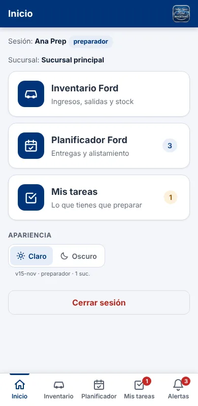
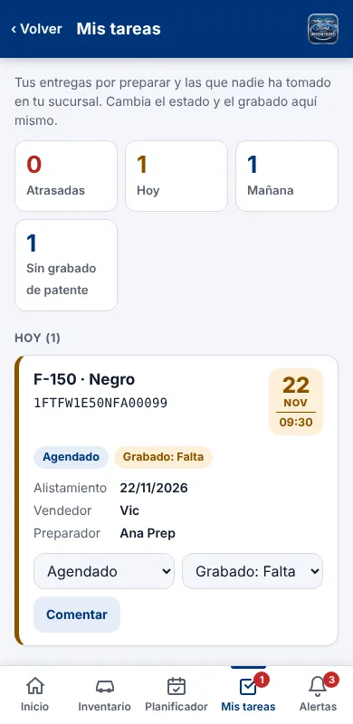
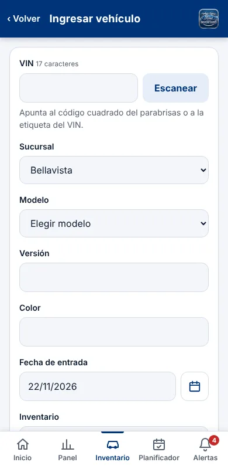

Qué puedes hacer
- Ver y mover el inventario de tu sucursal: ingresar autos, actualizarlos y trasladarlos a otra sucursal.
- Ver Mis tareas: las entregas que debes preparar, ordenadas por urgencia.
- Cambiar el estado y el grabado de patente de las entregas y comentar los accesorios.
- Recibir avisos cuando te asignan o te quitan una entrega.

Entrar a la app
Abre https://nachioc.github.io/FordInventory/ en tu celular o computador.
- Escribe tu RUT y tu contraseña, y toca Entrar.
- Si es tu primera vez, toca Crear cuenta, escribe tu nombre, RUT y una contraseña. Luego elige tu sucursal y tu rol y espera la aprobación de un administrador: verás «Cuenta pendiente» hasta entonces (toca Reintentar).
- Si te dieron una clave temporal, la app te pedirá crear una nueva antes de seguir.
- Si no recuerdas tu clave, toca Olvidé mi clave o pídele al administrador que la restablezca.
El RUT debe ser válido (la app revisa el dígito verificador).
Instalarla como app
No necesitas tienda de aplicaciones: se instala desde el navegador y queda con su ícono, como cualquier app.
Android (Chrome)
Menú ⋮ → Instalar app (o «Agregar a la pantalla principal»).
iPhone (Safari)
Botón Compartir → Agregar a inicio. Es obligatorio para recibir avisos en iPhone.
Computador
Chrome, Edge o Brave: ícono de instalar al final de la barra de direcciones.
Activar los avisos en el celular
La app te avisa como un WhatsApp, aunque esté cerrada. Recibes: las entregas que te asignan, las que te quitan, los cambios en tus entregas, los traslados que llegan a tu sucursal y el resumen diario.
- Entra a Alertas (campana).
- En la caja azul toca Activar avisos y acepta el permiso del navegador. La caja desaparece sola cuando ya están activos.
- Toca Enviar aviso de prueba para comprobar que llega.
- Para dejar de recibirlos en ese dispositivo, usa Desactivar avisos.

Modo claro, oscuro y vistas
En Inicio, al final, elige Claro u Oscuro. Se recuerda en ese dispositivo.
Los datos se abren siempre en modo lista (tabla) y puedes pasar a tarjetas con los botoncitos de arriba; la app recuerda tu elección. El planificador es solo un calendario.
En el celular, además de los botones del menú inferior, puedes deslizar el dedo a los lados para pasar entre Inicio, Inventario, Planificador y Alertas.
Mis tareas
Entra por Mis tareas (menú inferior o botón en Inicio). Aquí está todo lo que tienes que preparar:
- Las entregas asignadas a ti y las que están sin asignar en tu sucursal.
- Agrupadas en Atrasadas, Hoy, Mañana, Esta semana y Más adelante.
- Arriba, el resumen: atrasadas, hoy, mañana y cuántas faltan de grabado de patente.
- El numerito rojo del menú cuenta las de hoy y las atrasadas que aún no están listas.
- Abre la tarjeta de la entrega.
- Cambia el estado (por ejemplo a «En preparación» y luego a «Lista para entregar»).
- Cuando hagas el grabado, cambia Grabado a «OK».
- Toca Comentar para anotar accesorios instalados u observaciones.

Estados de la entrega
El flujo típico es: Agendado → En preparación → Lista para entregar → Entregado. «Reagendado» se usa cuando cambia la fecha.
- Al pasar a Lista para entregar, el vendedor recibe «¡Tu entrega está lista!».
- Si el grabado de patente está pendiente, la app pide confirmación antes de marcar «Lista» o «Entregado».
- Al pasar a Entregado, el auto sale del inventario solo.
Ver el inventario
Entra por Inventario. Arriba ves cuántos autos hay en stock y cuántos hay en cada inventario (Salón, Vitrina, Patio, Subterráneo, Equipador).
- Elige En stock, Trasladados o Todos.
- Filtra por modelo, ubicación, estado o antigüedad, o busca por VIN, versión, color o vendedor.
- Toca Limpiar filtros para volver a ver todo.
Antigüedad: los autos que llevan mucho tiempo sin salir muestran un chip amarillo o rojo con los días. Los umbrales los define el administrador o el jefe (por defecto 60 y 90 días).


Ingresar un vehículo
Ingresar un vehículo
- En Inventario toca Ingresar.
- Lo primero es el VIN: toca Escanear y fotografía el código cuadrado del parabrisas o la etiqueta, o escríbelo (17 caracteres, sin I, O ni Q). La app lee el VIN y completa el modelo.
- Completa versión, color, fecha de entrada, inventario y estado. Vendedor y observación son opcionales.
- Toca Guardar ingreso. Si el VIN ya está en stock, la app te avisa.

¿Y la salida?
Un auto sin vender nunca «sale»: se traslada a otra sucursal. La salida ocurre sola cuando la entrega al cliente se marca como Entregado en el planificador (y se deshace si esa entrega vuelve a otro estado).
Corregir un dato
En la tarjeta (o con el lápiz en la lista) toca Actualizar, cambia lo que necesites y guarda. Todo queda en el historial.
Traslados con grúa
Los autos se mueven entre sucursales con la grúa. Antes se pedía por correo; ahora se pide en la app y queda todo registrado: quién lo pidió, cuándo, quién lo retiró y cuándo llegó.
| Estado | Qué significa |
|---|---|
| Solicitado | Alguien pidió el traslado. |
| Programado | La grúa ya tomó el pedido. |
| En tránsito | El auto salió y va en camino. En el inventario se ve «En tránsito → sucursal». |
| Recibido | Llegó: el auto pasa solo a la sucursal nueva. |
| Cancelado | Se canceló antes de salir. |
Pedir un traslado
- En Inventario toca Solicitar traslado (o entra por Traslados y toca Solicitar traslado).
- Escribe el VIN (o los últimos dígitos) o elige modelo y versión.
- Elige la sucursal de destino, el día (y la hora, si importa), el motivo y si es urgente.
- Toca Solicitar traslado. La grúa, los jefes y los preparadores de las dos sucursales reciben un aviso.
- No hay que esperar aprobación de nadie.
- Un auto con una entrega activa en el planificador no se puede trasladar: primero se entrega o se cambia la entrega de sucursal.
- Puedes cancelar tu solicitud mientras el auto no haya salido.
En Traslados puedes marcar como recibido los autos que llegan a tu sucursal.
Ver el planificador de entregas
Entra por Planificador. Las entregas se agrupan en Atrasadas, Hoy, Mañana y Próximos días. Las que vencen hoy, mañana o ya vencieron se marcan y suman al número de Alertas.
- Filtra por Activas, Entregadas o Todas, por estado, o busca por VIN, modelo o vendedor.
- Las entregas se ven en un calendario: toca un día para ver sus entregas.

Calendario
El modo calendario muestra el mes completo. Cada día con entregas lleva el número de entregas y se pinta más fuerte mientras más carga tenga (1, 2 a 3, 4 o más). Toca un día para ver sus entregas debajo; usa ‹ › para cambiar de mes y Hoy para volver.

Exportar a Excel o CSV
Al final del Inventario y del Planificador hay dos botones: Exportar CSV y Exportar Excel.
- Se exporta lo que estás viendo: respeta los filtros, la búsqueda y la sucursal elegida.
- El inventario incluye la columna Días en inventario.
- El Excel (.xlsx) necesita internet la primera vez; si no hay, la app te baja un CSV, que Excel también abre con tildes bien.